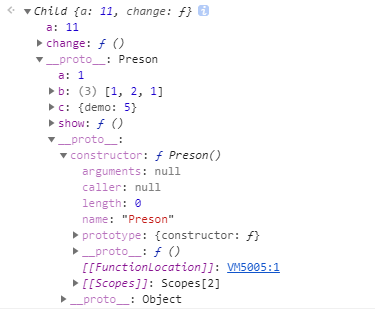

慎終如始，則無敗事。——《道德經》
简介
这道面试题考察的比较综合，也有很多要注意的点，如果知道答案就没有必要往下看了。
1 | function Preson() { |
考察点
这道题比较经典考察了JavaScript中很多方面的知识，大致如下几点：
- prototype 原型、原型链问题
- new 改变 this 指向，new 产生实例属性和原型属性
- 值类型和引用类型
- 原型继承
是一道比较综合的题前四题比较好答，后面的两题想多或者想少了都会出错。这里就对一些知识点不多做赘述，可以查看往期文章了解。
往期文章
JavaScript 类型转换（一） 常见数据类型 >
...后期添加
结题需要的知识点
大致的知识点如下：
- 构造函数有一个
prototype属性指向原型对象，多个实例属性共享一个原型对象 - 实例中的属性都是独立的互相之间不会影响
- 每一个实例都有一个隐式原型
__proto__指向构造函数的原型对象 this的指向问题，大致如下：
- 作为对象方法时，谁调用就指向谁
new、bind、call、apply都会改变 this 的指向- 箭头函数的
this从外层普通函数获取
- 对象字面量和数组都是引用对象
- 原型链的查找规则： 就近原则
- 当实例上存在属性时， 用实例上的
- 如果实例不存在，顺在原型链，往上查找，如果存在，就使用原型链的
- 如果原型链都不存在，就用 Object 原型对象上的
- 如果 Object 原型对象都不存在， 就是 undefined
第一问 parent.show()
1 | parent.show(); |
调用parent.show()的方法，其实就是调用parent实例上的show方法，直接输出1, [1, 2, 1], 5;没什么太多解释的，了解new关键字就可以。
第二问 child1.show()、child2.show()
1 | child1.show(); |
首相要了解下面的代码：
1 | Child.prototype = new Preson(); |
上面代码把Child.prototype指向一个Preson的实例，可以知道Child.prototype.__proto__指向Preson.prototype;Child.prototype.constructor指向Preson。下面是验证代码：
1 | Child.prototype.__proto__ === Preson.prototype; // true |
child1、child2的结构如下图所示：

child1、child2都是Child构造函数实例化产生的，所以child1.show() child2.show()是调用的Child.prototype上的方法，但是注意child1、child2的对象上都声明了一个新属性a。
根据上面第6条知识点可知结果为11, [1, 2, 1], 5)、12, [1, 2, 1], 5；
注意
从代码上看child1.__proto__.b数组的第三项是指向child1.__proto__.a的，那我们此时修改child1.__proto__.a的值，是否会影响child1.show()的结果呢:
1 | child1.__proto__.a = 12123; |
是没有影响的，因为parent实例生成的时候，this.a指向了一个原始值2,所以this.b中的第三项实际上是被赋值了一个原始值，故此处乍看起来像是引用类型的赋值，实则不是。原始值赋值会开辟新的存储空间，使得this.a和this.b[2]的值相等，但是却指向了堆内存里的不同地址。
第三问 parent.show()
1 | parent.show(); |
根据上面第2条知识点，可知preson和Child是Person的不同的实例，它们之间不会相互影响，所以它的经过不会更改为1, [1, 2, 1], 5。
第四问 child1.show()、child2.show()
1 | // 前面执行了 |
child1.change()执行了change()时执行过程如下：
this.b.push(this.a)
由于this的动态指向特性，this.b会指向Child.prototype上的b数组,this.a会指向child1的a属性,所以Child.prototype.b变成了[1,2,1,11];
this.a = this.b.lengththis.b.length经过上一步的添加了一条数据变为了4，所以当前的this.a就是4。
this.c.demo = this.a++;this.a是4，this.c.demo的值被复制为4，不要忽略this.a++以后的值变为了5。
child2执行了change()方法, 而child2和child1均是Child类的实例，所以他们的原型链指向同一个原型对象Child.prototype,也就是同一个parent实例，所以child2.change()中所有影响到原型对象的语句都会影响child1的最终输出结果
child2.change()执行了change()时执行过程如下：this.b.push(this.a)
由于this的动态指向特性，this.b会指向Child.prototype上的b数组,this.a会指向child2的a属性,所以Child.prototype.b变成了[1,2,1,11,12];
this.a = this.b.lengththis.b.length经过上一步的添加了一条数据变为了5，所以当前的this.a就是5。
this.c.demo = this.a++;this.a是5，this.c.demo的值被复制为5，不要忽略this.a++以后的值变为了6。
所以会输出如下：
1 | child1.show(); // 5, [1,2,1,11,12], 5 |
总结
- 前端的所有知识都是比较零散的，所以尽量要建立自己的知识结构图才方便以后的查漏补缺
- 因为知识比较零散不便于记忆，最好多找几个切入点把零散的知识串联起来更容易记住
- 没有别的办法多写、多看、多记一遍不行就直到记住为止
值类型变量赋值给引用类型时，改变值类型变量的值并不会影响赋值给引用类型中的值，
1 | var test = 111; |
参考
javascript 基础修炼(1)——一道十面埋伏的原型链面试题 > javascript 原型链的一道面试题的分析（详细）